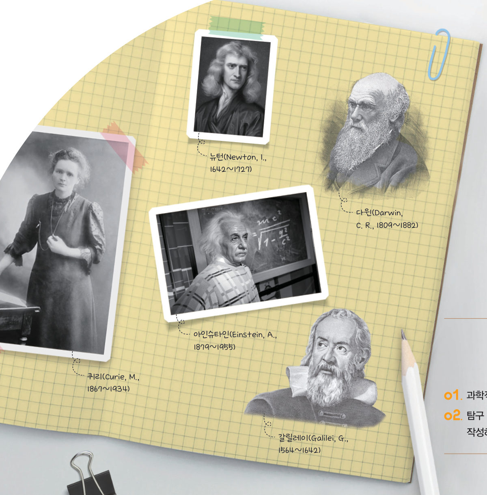
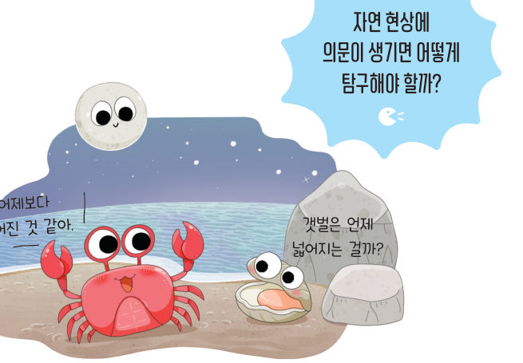
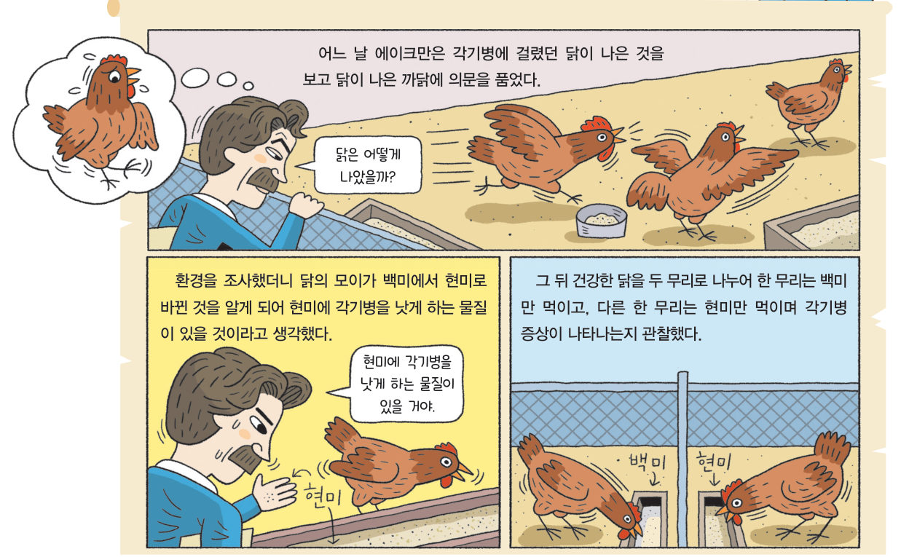
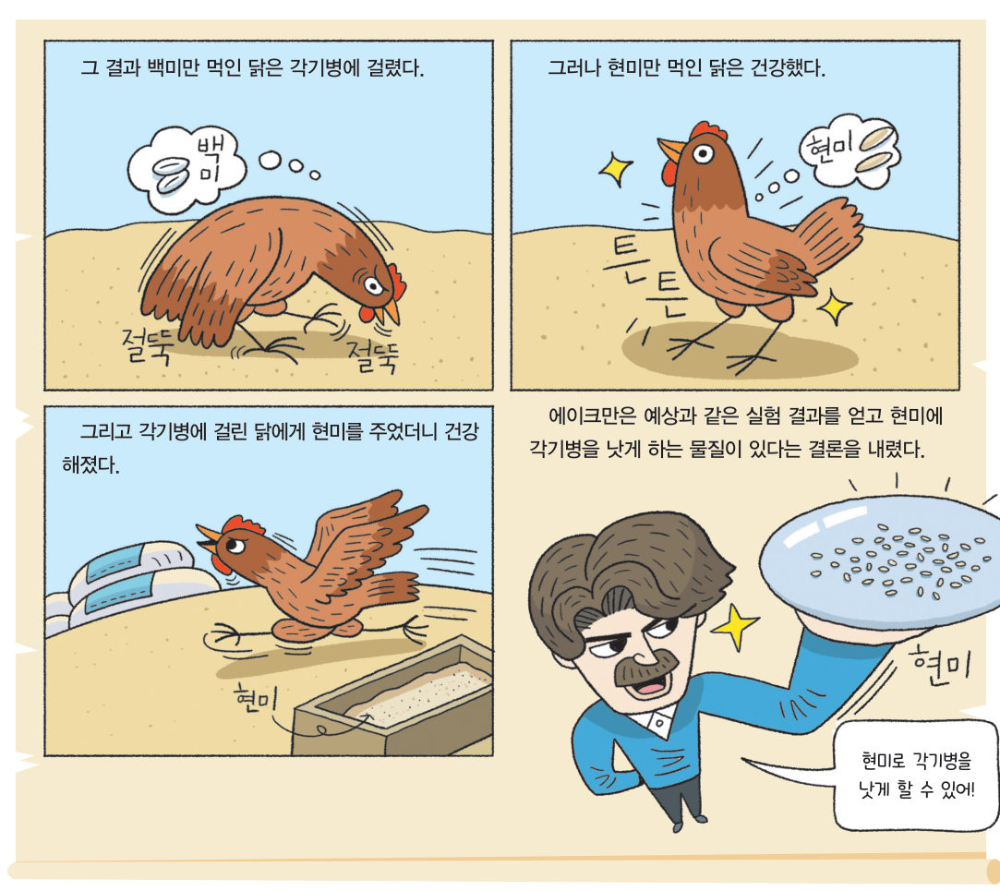
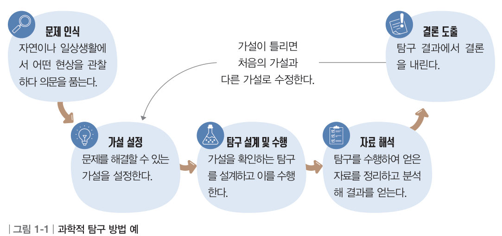
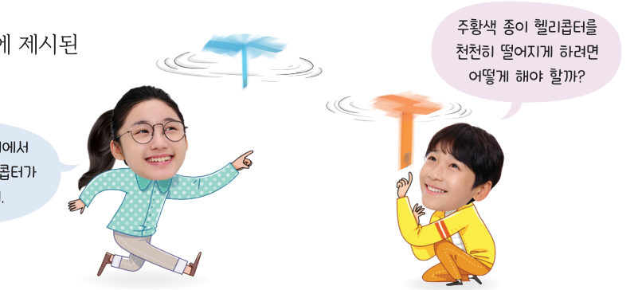
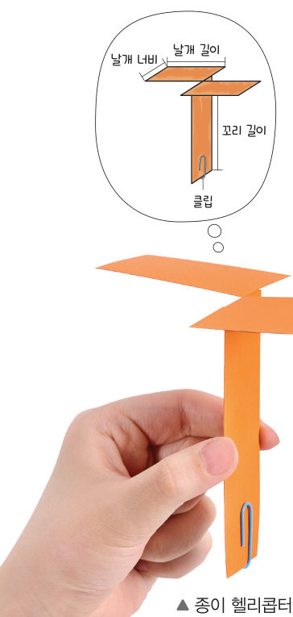

“오늘은 어제보다 갯벌이 넓어진 것 같아.” “갯벌은 언제 넓어지는 걸까?” 자연 현상에 의문이 생기면 어떻게 탐구해야 할까? 에이크만의 각기병 이야기를 따라가 보고, 가상 종이 헬리콥터로 과학적 탐구 방법의 절차를 직접 밟아 보자.
인류는 자연을 이해하려고 끊임없이 탐구해 왔어. 그 결과 과학이 발전했고 다양한 첨단 과학기술이 등장했지.
과학적 탐구는 어떻게 이루어질까?
밤하늘에 보이는 별자리는 계절에 따라 달라지고, 물체는 항상 지면을 향해 아래로 떨어진다. 오래전부터 사람들은 이렇게 자연이나 일상생활에서 나타나는 현상에 의문을 품고, 이를 해결하기 위해 여러 가지 방법으로 탐구해 왔다. 다음 이야기에서 에이크만(Eijkman, C., 1858~1930)이 ●각기병을 낫게 하는 방법을 알아내기 위해 과학적으로 탐구한 과정을 살펴보자.


에이크만은 자신의 ●가설이 맞다는 것을 확인하고 현미에 각기병을 낫게 하는 물질이 있다는 결론을 내렸다. 그 뒤 다른 과학자들이 각기병을 낫게 한 물질이 바이타민 B임을 알아냈다. 에이크만과 같이 가설을 설정하여 탐구할 때는 그림 1-1과 같은 과학적 탐구 방법을 따른다.

| ① 각기병에 걸렸던 닭이 나은 것을 보고 그 까닭에 의문을 품었다. | |
| ② 현미에 각기병을 낫게 하는 물질이 있을 것이라고 생각했다. | |
| ③ 건강한 닭을 두 무리로 나누어 백미와 현미를 각각 먹였다. | |
| ④ 백미만 먹인 닭은 각기병에 걸렸고 현미만 먹인 닭은 건강했다. | |
| ⑤ 현미에 각기병을 낫게 하는 물질이 있다고 결론을 내렸다. |


떨어지는 데 걸리는 시간에 영향을 줄 수 있는 다른 요인(날개 너비, 클립 수 등)으로 가설을 세우고 위의 가상 실험으로 확인해 보자.
가설을 설정하여 탐구할 때는 탐구 결과를 바탕으로 결론을 도출한다. 가설이 맞지 않으면 처음의 가설을 수정하여 다시 탐구를 수행한다.
| ③ 에이크만의 실험에서 닭의 먹이의 종류는 같게 설정해야 할 조건이다. | |
| ④ 에이크만은 가설이 탐구 결과와 일치하여 현미에 각기병이 낫는 물질이 있다는 결론을 내렸다. | |
| ⑦ 날개 길이가 영향을 준다는 가설을 세웠을 때, 다르게 해야 할 조건은 날개 길이이다. | |
| ⑧ 이때 날개 너비, 꼬리 길이, 클립 수는 같게 해야 할 조건이다. | |
| ⑨ 날개 길이와 낙하 시간의 관계를 해석하는 단계는 탐구 설계 및 수행이다. | |
| ⑩ 가설이 맞다면 처음의 가설과 다른 가설로 수정한다. |